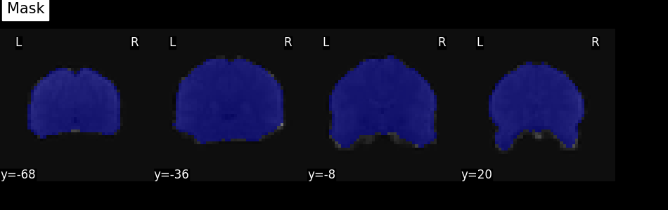
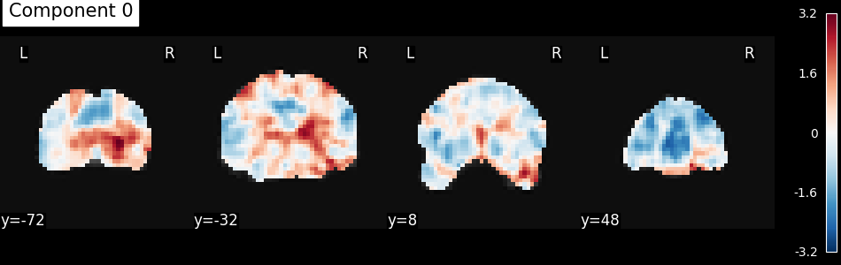

Note
Go to the end to download the full example code. or to run this example in your browser via Binder
Simple example of NiftiMasker use¶
Here is a simple example of automatic mask computation using
nilearn.maskers.NiftiMasker. The mask is computed and visualized.
Retrieve the brain development functional dataset¶
We fetch the dataset and print some basic information about it.
from nilearn.datasets import fetch_development_fmri
dataset = fetch_development_fmri(n_subjects=1)
func_filename = dataset.func[0]
print(f"First functional nifti image (4D) is at: {func_filename}")
[fetch_development_fmri] Dataset directory found:
/home/runner/nilearn_data/development_fmri
[fetch_development_fmri] Dataset directory found:
/home/runner/nilearn_data/development_fmri/development_fmri
[fetch_development_fmri] Dataset directory found:
/home/runner/nilearn_data/development_fmri/development_fmri
First functional nifti image (4D) is at: /home/runner/nilearn_data/development_fmri/development_fmri/sub-pixar123_task-pixar_space-MNI152NLin2009cAsym_desc-preproc_bold.nii.gz
Compute the mask¶
As the input image is an EPI image, the background is noisy
and we cannot rely on the 'background' masking strategy.
We need to use the 'epi' one.
from nilearn.maskers import NiftiMasker
masker = NiftiMasker(
mask_strategy="epi",
memory="nilearn_cache",
memory_level=1,
smoothing_fwhm=8,
standardize="zscore_sample",
)
Note
When viewing an Nilearn estimator in a notebook (or more generally on an HTML page like here) you get an expandable ‘Parameters’ section where the parameters that have different values from their default are highlighted in orange. If you are using a version of scikit-learn >= 1.8.0 you will also get access to the ‘docstring’ description of each parameter.
Note
You can also note that after fitting, the HTML representation of the estimator looks different than before fitting.
Visualize the mask¶
We can quickly get an idea about the estimated mask for this functional image by plotting the mask.
We get the estimated mask from the mask_img_ attribute of the masker:
the final _ of this attribute name means it was generated
by the fit method.
We can then plot it using the plot_roi function
with the mean functional image as background.
from nilearn.image.image import mean_img
from nilearn.plotting import plot_roi, show
mask_img = masker.mask_img_
mean_func_img = mean_img(func_filename)
plot_roi(mask_img, mean_func_img, display_mode="y", cut_coords=4, title="Mask")
show()

Visualize the masker report¶
More information can be obtained about the masker and its mask
by generating a masker report.
This can be done using
the generate_report method.
Here we use the ‘brainsprite’ engine
that gives an interactive visualization
instead of the static one generated
by the matplotlib engine.
report = masker.generate_report(engine="brainsprite")
/home/runner/work/nilearn/nilearn/.tox/doc/lib/python3.10/site-packages/numpy/core/fromnumeric.py:771: UserWarning:
Warning: 'partition' will ignore the 'mask' of the MaskedArray.
Note
The generated report can be:
displayed in a Notebook,
opened in a browser using the
.open_in_browser()method,or saved to a file using the
.save_as_html(output_filepath)method.
Preprocess data with the NiftiMasker¶
We extract the data from the nifti image. By default this will return a 2D NumPy array with shape (n_samples, n_features).
(168, 24256)
Output to dataframe¶
You can use set_output
to decide the output format of transform.
If you want to output to a DataFrame, you can choose
"pandas" or "polars".
masker.set_output(transform="pandas")
fmri_masked = masker.transform(func_filename)
print(fmri_masked.head())
niftimasker0 niftimasker1 ... niftimasker24254 niftimasker24255
0 -1.006351 -0.323282 ... -1.211367 -0.711075
1 -1.968796 -0.664021 ... -1.561624 -0.514343
2 -2.163321 -0.273362 ... -1.835269 -0.823911
3 -0.791810 0.323022 ... 0.414807 1.005020
4 -1.493661 0.811071 ... 0.557249 0.901407
[5 rows x 24256 columns]
Run an algorithm and visualize the results¶
We can pass the extracted data to a wide range of algorithm.
Here we will just do an independent component analysis,
turn the extracted component back into images
(using inverse_transform),
then we will plot the first component.
from sklearn.decomposition import FastICA
from nilearn.image import index_img
from nilearn.plotting import plot_stat_map, show
ica = FastICA(n_components=10, random_state=42, tol=0.001, max_iter=2000)
components_masked = ica.fit_transform(fmri_masked.T).T
components = masker.inverse_transform(components_masked)
plot_stat_map(
index_img(components, 0),
mean_func_img,
display_mode="y",
cut_coords=4,
title="Component 0",
)
show()

/home/runner/work/nilearn/nilearn/.tox/doc/lib/python3.10/site-packages/sklearn/decomposition/_fastica.py:128: ConvergenceWarning:
FastICA did not converge. Consider increasing tolerance or the maximum number of iterations.
Total running time of the script: (0 minutes 19.365 seconds)
Estimated memory usage: 691 MB